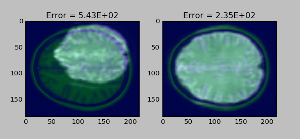

Design Team 0 Slides
Eric Bridgeford, Albert Lee, Eric Walker
F2G pipeline leg overview
Eric Bridgeford
Steps to Analysis
- Raw Data
- Distortion Correction
- Motion Correction
- Slice Timing Correction
- Spatial Smoothing
- Registration
- Statistical Analysis
Implemented Pipeline
- Raw Data
- Motion Correction
- Registration
- Timeseries Extraction
- Graph Generation
Raw Data
- fMRI functional data
- MPRAGE anatomical data
Challenges that came up along the way
- motion correction failures
- making image comparisons before and after operations
- deciding on metric for making image comparisons
Motion Correction Issues
- Recap: Motion correction corrects blurring from subjects moving their heads
- Goal: to use existing corrective scripts for DTI graphs
- Problem: Eddy correct fails for the scan type with fMRI graphs
- Solution: Easy, use mcFLIRT!
Image Comparison Issues
- Recap: QC requires image comparisons before and after a step takes place
- Goal: just take what goes in and compare to what comes out
- Problem: resolution related issues
- Solution: resample before performing a step
Metric for Image Comparisons
- Recap: need a metric that determines similarity between two arrays
- Goal: use the DICE comparison metric
- Problem: DICE comparison just checks overlap of values (exactness of overlap); does nothing for similarity of values
- Solution: not the best solution, but so far using MSE helps
Quality Control Example of Results
- Left: image before Registration
- Right: image after registration
- Note: very good overlap with template; low MSE

Timeline
- End of Summer: have pipeline complete and process lots of data
- End of first semester: have upload service completely integrated
- End of second semester: have visualization tools completely built and summarize project
ThreeJS tutorials and demonstrations
Albert Lee
3D histograms
- Not very useful
- Interesting to see how the code works
HTML Interactions
- Even when using Javascript predominantly for visualization still often need HTML interaction
- CSV interaction
- Javascript predominantly for functionality not structure
Clarity Representation
Please download and insert the csv file located here
//Source: http://bl.ocks.org/phil-pedruco/9913243
}
3D Scatterplot
Conversely for this example, eliminating standard ThreeJS structure can result in interesting graphics
Please download and insert the csv file located here
Result
Time Series Analysis Ch. 6-7
Eric Walker